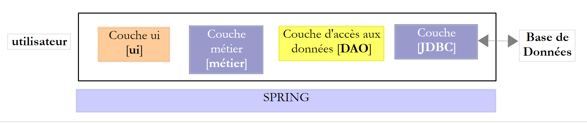
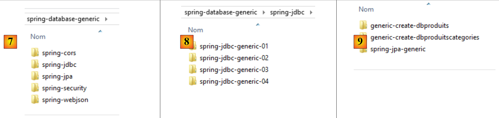

1. Introducción
El PDF de este documento está disponible |AQUÍ||.
Los ejemplos de este documento están disponibles |AQUÍ|.
1.1. Contenido
En este documento, proponemos estudiar diferentes configuraciones de implementación de bases de datos. Consideremos la siguiente arquitectura por capas:
 |
El flujo de ejecución va de izquierda a derecha:
- primero se ejecuta una de las clases de la capa [ui] (interfaz de usuario). Esta instancia las capas [business] y [DAO]. Si la capa [ui] es una interfaz gráfica de usuario, espera entonces a que el usuario realice alguna acción. Una acción del usuario puede desencadenar la ejecución de métodos en todas las capas de la arquitectura, hasta llegar a la base de datos. El resultado de estas ejecuciones se devuelve al usuario de una forma u otra;
Las funciones de las diferentes capas podrían ser las siguientes:
- La capa [JDBC] (Java Database Connectivity) es una interfaz universal de acceso a bases de datos. Siempre presenta la misma interfaz a la capa [DAO]. Si se cambia de SGBD, solo hay que cambiar el controlador JDBC. La capa [DAO] permanece inalterada si se ha tenido cuidado de seguir un determinado conjunto de reglas. Sin embargo, es difícil garantizar una portabilidad del 100 % entre SGBD, ya que a menudo contienen una cantidad significativa de SQL propietario que es difícil de ignorar, ya que suele proporcionar mejoras de rendimiento. En cuanto se utiliza SQL propietario, la portabilidad entre SGBD ya no es posible. Además, los SGBD suelen tener políticas diferentes para la generación automática de claves primarias, así como palabras clave reservadas que varían de un sistema a otro. En este documento, sin embargo, hemos logrado portar la arquitectura JDBC estudiada a seis SGBD diferentes aceptando que se requiere un proyecto de configuración para cada uno de ellos;
- la capa [DAO] expone una interfaz para acceder a los datos de la base de datos específica que se está utilizando (que debe distinguirse de la interfaz JDBC, que expone métodos válidos para cualquier SGBD);
- la capa [business] implementa las reglas de gestión de la aplicación o reglas de negocio.
- Sus datos de entrada consisten en datos de la base de datos a través de la capa [DAO] y/o entradas del usuario transmitidas por la capa [UI];
- Genera datos que puede guardar en la base de datos a través de la capa [DAO] y/o devolver a la capa [UI] que los solicitó, para su visualización por parte del usuario;
- La capa [UI] es la capa que ejecuta las acciones del usuario y devuelve los resultados de dichas acciones al usuario;
Por encima, la capa [DAO] envía consultas SQL a la capa [JDBC] para su ejecución en el SGBD. En los últimos años (desde 2006), esta arquitectura ha evolucionado de la siguiente manera:
 |
Ahora es la capa JPA (Java Persistence API) la que envía consultas SQL a la capa JDBC y recibe los resultados. La capa [JPA] presenta operaciones a la capa [DAO] para persistir, modificar, eliminar y recuperar objetos. La capa [DAO] ya no emite comandos SQL. Este enfoque es más portátil porque las implementaciones de JPA gestionan las diferencias entre los SGBD, pero es más lento que la tecnología JDBC. Realizaremos pruebas de rendimiento para demostrarlo. La tecnología JPA formaliza el trabajo realizado por el marco Hibernate [http://hibernate.org/] hace años.
Examinaremos dos capas [DAO] utilizando una de las dos arquitecturas siguientes:
 |
 |
Exigiremos que las capas [DAO1] y [DAO2] implementen la misma interfaz [IDAO]. De este modo, la prueba [JUnitTestsDao] será la misma para ambas configuraciones y nos permitirá comparar el rendimiento. La capa [DAO1] se implementará con Spring JDBC y la capa [DAO2] con Spring JPA;
Una vez hecho esto, expondremos la interfaz [IDAO] en la web de la siguiente manera:
 |
- En [1], la capa [IDAO] se expone en la web a través de una capa web [2] implementada por Spring MVC. De hecho, es la interfaz [IDAO] la que se expone, y construiremos dos versiones del servicio web dependiendo de si esta interfaz se implementa utilizando una arquitectura [DAO-JDBC] o [DAO-JPA-JDBC];
- En [B], un cliente remoto utiliza las URL expuestas por el servicio web, que proporcionan acceso a los métodos de la capa [IDAO-server]. Nos aseguraremos de que la capa [DAO-Client] [3] implemente la interfaz [IDAO-server] [1]. Esto nos permitirá utilizar la misma prueba [JUnitTestsDao] que ya se ha utilizado dos veces [4];
- En [3], la capa [DAO-Client] se implementará utilizando Spring RestTemplate;
Una vez hecho esto, protegeremos el acceso al servicio web:
 |
- en [5], la solicitud HTTP del cliente pasa por una capa de autenticación implementada con Spring Security;
Una vez hecho esto, evolucionaremos la arquitectura anterior hacia la siguiente:
 |
- En [3], la aplicación cliente es en sí misma una aplicación web. Contará con un formulario [5] que permitirá a los usuarios consultar las URL del servicio web seguro. El acceso HTTP al servicio web seguro se gestionará a través de una capa [DAO-client-js] implementada en JavaScript. Esta arquitectura utiliza lo que se conoce como solicitudes entre dominios:
- el servicio web [2] proporciona URL del tipo [http://machine1:port1/];
- la aplicación web cliente [3] se descarga desde una URL [http://machine2:port2/]. Si [http://machine2:port2/] no es idéntica a [http://machine1:port1/] (misma máquina, mismo puerto), el navegador del cliente bloqueará las llamadas HTTP procedentes de la capa [DAO-client-js]. Para resolver este problema, el servicio web debe permitir las solicitudes entre dominios. Veremos cómo;
Los proyectos presentados se han probado con los siguientes seis SGBD:
- MySQL 5 Community Edition;
- SQL Server 2014 Express;
- PostgreSQL 9.4;
- Oracle Express 11g Release 2;
- IBM DB2 Express-C 10.5;
- Firebird 2.5.4;
Para cada uno de estos SGBD, desarrollamos cuatro capas [DAO] diferentes:
- una capa implementada con Spring JDBC;
- una capa implementada con Spring JPA y el proveedor Hibernate JPA;
- una capa implementada con Spring JPA y el proveedor EclipseLink JPA;
- una capa implementada con Spring JPA y el proveedor JPA de OpenJPA;
Por lo tanto, aquí se presenta un conjunto de veinticuatro configuraciones diferentes. Hemos realizado un esfuerzo significativo para factorizar el código:
- la mayor parte del código se escribe una sola vez. Se basa en dos proyectos de configuración de Maven:
- uno configura la capa JDBC;
- el otro configura la capa JPA;
 |
 |
El proyecto de configuración de Maven para la capa JDBC [1] de un SGBD específico consta de dos pasos:
- importar el archivo del controlador JDBC;
- definir las credenciales de acceso a la base de datos en uso y las diversas sentencias SQL que la capa [DAO1] enviará al controlador JDBC. Aunque el lenguaje SQL está estandarizado, nos encontramos con problemas de portabilidad debidos principalmente a la presencia en las consultas de nombres de tablas o columnas que resultaban ser palabras clave prohibidas en ciertos SGBD (la tabla ROLES en DB2, la columna PASSWORD en Firebird). Además, aunque normalmente los nombres de columna no distinguen entre mayúsculas y minúsculas, nos encontramos con un problema en PostgreSQL relacionado con la columna ID de la clave primaria en las tablas. Se requería que se llamara «id» en minúsculas. Estos son ejemplos típicos de problemas de portabilidad inesperados;
Los tres proyectos Maven para configurar la capa JPA [2] de un SGBD específico también constan de dos pasos:
- importar el archivo de implementación de JPA;
- configurar la implementación de JPA utilizada para el SGBD conectado específico. De hecho, es la capa JPA la que emite comandos SQL a la capa JDBC. Para ser eficaz, debe conocer el SGBD con el fin de enviarle comandos SQL que este reconozca. Estos comandos pueden utilizar el SQL propio de ese SGBD, así como sus características específicas (tipos de datos, secuencias, disparadores, procedimientos, generación automática de claves primarias, etc.);
Esto da como resultado veinticuatro proyectos de configuración de Maven (4 configuraciones × 6 SGBD) en los que se basarán todos los demás proyectos de operaciones con bases de datos. En los diagramas anteriores, dado que las capas [DAO1] y [DAO2] proporcionan la misma interfaz, las 24 configuraciones de las dos arquitecturas anteriores se probarán utilizando una única clase de prueba [JUnitTestsDao]. Una vez verificadas estas arquitecturas, no hay más dificultades:
- el proyecto Maven para publicar la base de datos en la web se basa en estas dos arquitecturas. Por lo tanto, aquí también hay 24 configuraciones posibles;
- el proyecto Maven para proteger el acceso al servicio web se basa en el proyecto anterior y también tiene 24 configuraciones posibles;
- Por último, el proyecto Maven que permite realizar solicitudes entre dominios al servicio web seguro se basa en el proyecto anterior y también ofrece 24 configuraciones posibles;
El estudio se lleva a cabo utilizando el SGBD MySQL5 y la implementación JPA de Hibernate. A continuación, portamos el código a las implementaciones JPA de Eclipselink y OpenJPA. Por último, lo portamos a otras bases de datos (PostgreSQL, Oracle, SQL Server, DB2, Firebird).
Este curso está dirigido a principiantes. Se explican la mayoría de los conceptos utilizados. No se requieren conocimientos previos de programación de bases de datos ni de programación web. Sin embargo, es necesario tener un conocimiento sólido del lenguaje SQL, ya que no se explican las consultas SQL utilizadas.
Para comprender los ejemplos, se necesitan conocimientos básicos del lenguaje Java, que se pueden adquirir en cualquier curso introductorio sobre el lenguaje. Bastará con los dos primeros capítulos del documento [Introducción al lenguaje Java]. Se trata de un documento antiguo (1998, revisado en 2002), pero contiene los fundamentos. Para un curso completo, se puede leer el extenso libro de Jean-Marie Doudoux [http://www.jmdoudoux.fr/java].
Este documento no es en absoluto exhaustivo. Su único objetivo es proporcionar una metodología y un código que puedan reutilizarse en contextos similares. El documento se ha redactado de manera que pueda leerse sin necesidad de tener un ordenador a mano. Por ello, se incluyen numerosas capturas de pantalla.
Aunque no abarca todas las capacidades del lenguaje Java ni todas sus áreas de aplicación, este documento puede utilizarse como recurso de aprendizaje del lenguaje. Siguiendo este documento —aunque no sea en su totalidad—, un lector principiante alcanzará un nivel «avanzado de Java» tanto en el uso del lenguaje como del marco Spring. A continuación, podrá continuar su formación en Java con los siguientes libros:
- [Spring MVC y Thymeleaf con ejemplos] [https://stahe.github.io/es-springmvc-thymeleaf-janv-2015/], que continúa la exploración del ecosistema Spring al presentar su rama de «programación web MVC»;
- [Tutorial de AngularJS / Spring MVC] [https://stahe.github.io/en-spring-angular1.x-juillet-2014/], que presenta una arquitectura web cliente/servidor, en la que el cliente se implementa utilizando el marco [AngularJS] y el servidor utilizando [Spring MVC];
- [Introducción a Java EE], que se aleja del ecosistema Spring para pasar a una arquitectura web basada en JSF (Java Server Faces) y EJB (Enterprise JavaBeans);
- [Introducción a la programación para tabletas Android] [https://stahe.github.io/es-android-aout-2016/], que describe una arquitectura cliente/servidor, en la que el cliente es una tableta Android y el servidor es un servicio web implementado mediante Spring MVC;
1.2. Fuentes
Este documento tiene dos fuentes principales:
- [ ref1]: [Spring MVC y Thymeleaf con ejemplos] en la URL [https://stahe.github.io/es-springmvc-thymeleaf-janv-2015/]. Este documento retoma el trabajo realizado y presentado en [ref1] utilizando una base de datos diferente. En pocas palabras, lo saca del contexto de la programación web con Spring MVC. Decidí crear un documento independiente porque consideré que el código y la metodología utilizados en [ref1] para exponer una base de datos en la web eran reutilizables;
- [ ref2]: [Java Persistence in Practice] en la URL [https://stahe.github.io/es-jpa-juin-2007/];
Para obtener más información sobre Spring, puede consultar las siguientes referencias:
- el documento de referencia del marco Spring [http://docs.spring.io/spring/docs/current/spring-framework-reference/pdf/spring-framework-reference.pdf];
- Se pueden encontrar numerosos tutoriales de Spring en la URL [http://spring.io/guides];
- el sitio [developpez.com] dedicado a Spring [http://spring.developpez.com/];
- el tutorial [http://www.tutorialspoint.com/spring/spring_tutorial.pdf];
Los lectores con conocimientos insuficientes de SQL pueden aprender los conceptos básicos en el libro [Introducción a SQL con el SGBD Firebird] en la URL [https://stahe.github.io/es-sql-firebird-janv-2006/].
1.3. Herramientas utilizadas
Los siguientes ejemplos se han probado en el siguiente entorno:
- Equipo con Windows 8.1 Pro de 64 bits;
- JDK 1.8 (sección 23.1);
- IDE Spring Tool Suite 3.6.3 (sección 1);
- Navegador Chrome (no se utilizaron otros navegadores);
- Extensión de Chrome [Advanced Rest Client] (sección 1);
- SGBD MySQL 5.6 Community Edition (sección 23.4);
- SQL Server 2014 Express (sección 23.9);
- PostgreSQL 9.4 (sección 23.7);
- SGBD Oracle Express 11g Release 2 (apartado 23.6);
- SGBD IBM DB2 Express-C 10.5 (sección 23.8);
- SGBD Firebird 2.5.4 (sección 23.10);
- los clientes de EMS Manager para estos seis SGBD (sección 23.5);
Nota sobre JDK 1.8: Un método del caso práctico utiliza un método del paquete [java.lang] de Java 8.
La mayoría de los ejemplos son proyectos Maven que se pueden abrir en Eclipse, IntelliJ IDEA o NetBeans. A continuación, las capturas de pantalla proceden del IDE Spring Tool Suite, una variante de Eclipse.
1.4. Los ejemplos
Los ejemplos están disponibles |AQUÍ| como archivo ZIP descargable.
 |
- En [1], las carpetas de ejemplos;
- en [2], la carpeta [spring-core] contiene los proyectos de aprendizaje de Spring;
- en [3], la carpeta [spring-database-config] contiene los proyectos de configuración de JDBC y JPA para las seis bases de datos;
 |
- en [4], la configuración del SGBD Oracle. Contiene tres carpetas:
- [databases] contiene los scripts SQL para generar las dos bases de datos utilizadas en el documento;
- [jdbc-driver] contiene el controlador JDBC de Oracle, así como un script para instalarlo en el repositorio local de Maven;
- [eclipse] contiene [5] los cuatro proyectos de configuración de Oracle:
- [oracle-config-jdbc] configura la capa JDBC para acceder al SGBD;
- [oracle-config-jpa-hibernate] configura la capa JPA para acceder al SGBD utilizando el proveedor JPA de Hibernate;
- [oracle-config-jpa-eclipselink] configura la capa JPA para el acceso a la base de datos utilizando el proveedor JPA de Eclipselink;
- [oracle-config-jpa-openjpa] configura la capa JPA para el acceso a la base de datos utilizando el proveedor JPA OpenJPA;
- en [6], la carpeta [eclipse config / launch configurations] contiene las configuraciones de inicio que el lector puede importar a Eclipse y luego adaptar a su propio entorno;
 |
- en [7], la carpeta [spring-database-generic] contiene todo el código de acceso a la base de datos común a los seis SGBD y los tres proveedores JPA;
- En [8], [spring-jdbc] contiene cuatro proyectos que muestran la API JDBC, así como Spring JDBC;
- En [9], [spring-jpa / spring-jpa-generic] es el proyecto que utiliza una capa JPA para acceder a una base de datos. Los proyectos [generic-create-db*] son proyectos JPA utilizados para crear las bases de datos que utiliza la capa JPA;
 |
- En [10], la carpeta [spring-webjson] contiene los proyectos que exponen la base de datos en la web;
- [spring-webjson-server-jdbc-generic] es el servicio web que expone la base de datos a la que se accede a través de Spring JDBC;
- [spring-webjson-server-jpa-generic] es el servicio web que expone la base de datos a la que se accede a través de Spring JPA;
- [spring-webjson-client-generic] es el único cliente que permite acceder a los dos servicios web anteriores;
- en [11], la carpeta [spring-security] contiene los proyectos que exponen la base de datos en la web con acceso seguro;
- [spring-security-server-jdbc-generic] es el servicio web seguro que expone la base de datos a la que se accede a través de Spring JDBC;
- [spring-security-server-jpa-generic] es el servicio web seguro que expone la base de datos a la que se accede a través de Spring JPA;
- [spring-security-client-generic] es el único cliente que permite el acceso a los dos servicios web seguros anteriores;
- en [12], la carpeta [spring-cors] contiene los proyectos que exponen la base de datos en la web con acceso seguro, permitiendo el acceso entre dominios, como el que se origina desde el código JavaScript de un navegador;
- [spring-cors-server-jdbc-generic] es el servicio web seguro que permite el acceso entre dominios y expone la base de datos a la que se accede a través de Spring JDBC;
- [spring-cors-server-jpa-generic] es el servicio web seguro que permite el acceso entre dominios y expone la base de datos a la que se accede a través de Spring JPA;
- [spring-cors-client-generic] es una aplicación web que consulta los dos servicios web anteriores;